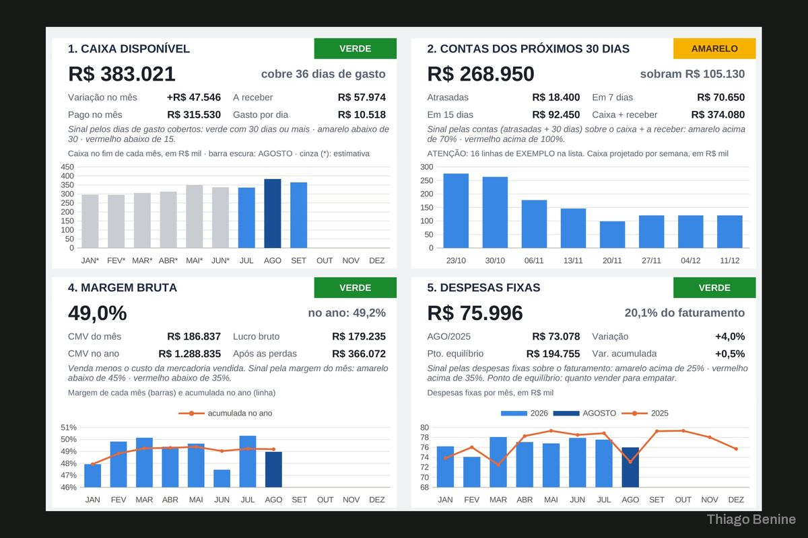
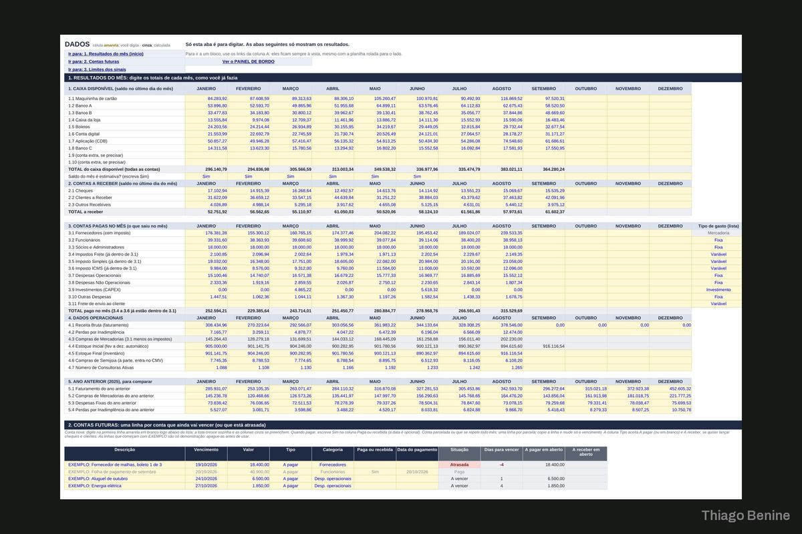

Planilha financeira com painel executivo e alertas
Um arquivo de Excel em que o dono digita os lançamentos e o painel monta gráficos e alertas sozinho.



Sobre o projeto
O dono de uma loja não queria um sistema, e sim uma planilha em que alimentasse os dados e visse gráficos e alertas. A planilha foi feita só com fórmulas compatíveis com a versão de Excel dele, sem macros, com campos de digitação destacados e protegidos, contas a pagar futuras e um painel de diagnóstico visual. Só foi entregue quando os números do painel bateram com os dele.
O que foi entregue
- Planilha de lançamentos
- Painel executivo com gráficos
- Alertas e contas a pagar
- Guia de uso em PDF
Avaliação do cliente
5,0 de 5
Superou todas as minhas expectativas, tanto pela qualidade quanto pelo profissionalismo e atenção aos detalhes. Entregou muito mais do que eu esperava.